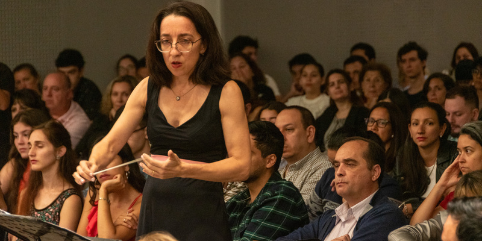

La Maestra Andrea Fusco, oriunda de Corrientes, Argentina, es una figura destacada en la cultura musical, reconocida por su maestría en la dirección orquestal y coral. Su sólida formación académica incluye un Doctorado en Artes de la Universidad Nacional de Córdoba, y títulos de Profesora y Licenciada en Música con especialidad en Dirección Orquestal y Coral de la Universidad Nacional del Litoral.
Su perfeccionamiento profesional es testimonio de su compromiso y talento, habiéndose formado con distinguidos maestros como Reinaldo Zemba, Thüring Bräm (Suiza) y Jorma Panula. Fue becada por la Embajada Suiza en 2001 para estudiar Dirección Orquestal en Lucerna, Suiza, y en 2006, una beca de la Secretaría de Cultura de la Nación le permitió continuar su desarrollo en Suiza y Eslovaquia. Participó en los prestigiosos Festivales de Verano de Dirección Orquestal en la Accademia Musicale Chigiana, Italia, bajo la tutela del Mtro. Gianluigi Gelmetti.
Dra. Fusco ha demostrado su versatilidad y liderazgo al frente de diversas orquestas. Ha sido Directora Invitada de orquestas sinfónicas en provincias argentinas como Corrientes, Chaco, Entre Ríos, Tucumán, Bahía Blanca y Tres de Febrero, así como de la Orquesta Sinfónica de Aguascalientes en México. Su excelencia fue reconocida al ser semifinalista en 2006 y obtener el Tercer Premio en 2007 del Concurso Internacional Simón Blech.
Además de su labor como directora, ha compartido su conocimiento como docente en la Cátedra de Dirección Orquestal de la Universidad Nacional del Litoral y como directora de la Orquesta Juvenil del Instituto de Música "Carmelo De Biasi". Su capacidad para inspirar y colaborar se refleja en sus direcciones junto a solistas de talla internacional como Luis Ascott, Mirian Conti, José Luis Juri, Oleg Pishenin, Lito Vitale Quinteto y Darío Volonté, entre otros.
En el ámbito operístico, la Dra. Fusco ha asumido el rol de directora musical en producciones de gran envergadura, incluyendo "I Pagliacci" (2013), "Hansel y Gretel" (2013-14), "Il Trovatore" (2018), "Cavalleria Rusticana" (2019) y, más recientemente, la aclamada "Aida" en 2023, consolidando su reputación como una figura influyente y polifacética en el mundo de la música clásica.

Un rol preponderante tuvo la Orquesta Sinfónica de la Provincia de Corrientes bajo dirección de la Maestra Andrea Fusco en la interpretación de los cuadros musicales en vivo. Con tres funciones de un espectáctulo de primer nivel, “Renace” marca el punto de partida para una nueva etapa del Teatro Vera, un hecho cultural y artístico llevado adelante junto a la comunidad cultural local, que involucró a actores, bailarines, músicos, audiovisualistas, compositores, arreglistas, técnicos y productores, tanto de Corrientes como de otros puntos del país, que volvieron a circular y dar vida a los pasillos, bambalinas y escenario del coliseo correntino, algunos, por primera vez, otros, volviendo nuevamente a la gran casa de las artes por más de 100 años de Corrientes, a sala llena durante dos jornadas.

Concierto sinónico interpretado por la Orquesta Sinfónica de la Provincia de Corrientes el día 6 de septiembre de 2025, como parte de una celebración del legado cultural alemán y del bicentenario de la inmigración alemana a la Argentina. El concierto, que presenta música inspirada en el personaje de la obra de Goethe, también contó con la participación del tenor Correntino Lisandro Palomo. Se interpretaron obras sinfónicas de compositores como Beethoven, Mendelssohn, Brahms y Tchaikovsky.

El pasado 12 de Septiembre, la Orquesta Sinfónica de Corrientes fue la invitada de lujo a este espectáculo que forma parte de la gira nacional "Alquimia". Un remolino de emociones invadió cada rincón del Teatro Oficial Juan de Vera este viernes por la noche. La cantautora Patricia Sosa se presentó a sala llena y con un repertorio que viajó por todos los géneros musicales que forman parte de su carrera en más de 40 años. La artista cantó sus temas clásicos, interpretó covers y compartió profundas reflexiones que la llevaron a quebrarse emocionalmente varias veces arriba del escenario.
No te pierdas las próximas presentaciones y actividades de la Dra. Andrea Fusco

Interpretación de obras de Beethoven y Brahms con la Orquesta Sinfónica Nacional.
Más Información
Taller intensivo para jóvenes directores corales con prácticas en vivo.
Más Información
Encuentro coral internacional con agrupaciones de Europa y América Latina.
Más Información